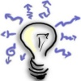
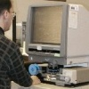

|
|
Patent ve faydalý modelde neden hala istediðimiz yerde deðiliz?
Semih Bektaþ, Makine Müh. (Patent Uzmaný) Adres Patent A.Þ., Nisan 2010, Ýstanbul
WIPO, 2009 raporunda Çin, Güney Kore, Brezilya'nýn yanýnda, Türkiye'yi de geliþmekte olan ülkelerin arasýnda göstermiþ, fakat raporu detaylý incelediðimizde, ülkemizin patent ve faydalý model olarak pek fazla üretken olmadýðýný anlýyoruz... |
 |
Bireysel icadýn anatomisi 2; Ýcadýn inovasyona dönüþme(me)si:
Arif Özver Ergin, Aralýk 2008, Ýstanbul
... Ýþte bu noktada icat ile inovasyonun ayrýmý ortaya çýkýyor ki bu süreç hem mucit hem de giriþimci için önemli dersler içeriyor. Bu da hikayenin ikinci bölümü... |
 |
Patent konusunda sýkça sorulan sorular ve cevaplarý (video):
Himmet Öztürk, Avrupa Patent Vekili, 4M Danýþmanlýk Ltd. Þti., Ýstanbul, Kasým 2008
Patent nedir? Patent tescil baþvurusunda hangi belgeler istenir? Patent tescili buluþ için uluslararasý koruma saðlar mý? Patent tescili için nasýl bir süreç yaþanýr? Patent tescili ne iþe yarar? Patent verilecek buluþlarda hangi özellik aranýr?.. |
 |
Tasarýmý tescillemeden ürünü piyasaya çýkarmayýn!
Kemal Yamankaradeniz, Destek Patent A.Þ., Ekim 2008, Ýstanbul
Tasarlamak kadar önemli bir baþka unsur da tasarlanan ürünleri korumaktýr. Firmalar özgün tasarýmlarýyla rakiplerine üstünlük saðlamak istiyorlarsa tasarýmlarýný mutlaka tescil ettirmelidir... |
|
Neden patent stratejilerine dayalý Ar-Ge?
Kemal Yamankaradeniz, Y.K.B., Destek Patent A.Þ., Eylül 2005, Ýstanbul
Bugün ulusal ve uluslararasý pazarlarda rekabet üstünlüðünü saðlayabilmemiz ancak patent stratejilerine dayalý Ar-Ge kurarak mümkün olabilir. Aksi takdirde Ar-Ge araþtýrmalarýnýn sonuçlarýndan tam olarak yararlanmak mümkün deðil... |
|
Fikri mülkiyet haklarý:
Av. Dr. Cahit Suluk, Ekim 2005
Fikri mülkiyet kavramý; patentler, faydalý modeller, markalar, endüstriyel tasarýmlar, çip tasarýmlarý, yeni bitki çeþitleri, fikir ve sanat eserleri, coðrafi iþaretler, ticaret unvanlarý, iþletme adlarý ve hatta gizli bilgileri kapsayacak kadar geniþ bir anlama sahiptir... |
 |
Model olarak Türkiye'de açýk inovasyon:
Arif Özver Ergin, Mayýs 2008, Ýstanbul
"Açýk inovasyon", Berkeley Profesörlerinden Henry Chesbrough tarafýndan ortaya atýlan bir kavram. Küresel ölçekte P&G ve 3M gibi firmalar bu konuda uzun yýllardýr önemli çalýþmalar yaparken, son günlerde Türkiye'de de açýk inovasyon olarak deðerlendirilebilecek çalýþmalar gün yüzüne çýkmaya baþladý... |
|
Teknoloji analizi:
Fatih Yalýnbaþ, Patent Bölüm Yöneticisi, Destek Patent A.Þ., Nisan 2008, Bursa
Patentlerin analiz edilmesi; Sektörde en çok buluþu ve en çok yatýrýmý kimlerin yaptýðýný, ileri bir Ar-Ge için ne tür personele ihtiyacý olduðunu, hangi ülkelerde sektörün raðbet gördüðünü ve en önemlisi mayýn tarlasýný gözler önüne serecektir... |
|
Ar-Ge birimlerini aydýnlatan güçlü ýþýk; Patent araþtýrmasý:
Fatih Yalýnbaþ, Patent Bölüm Yöneticisi, Destek Patent A.Þ., Eylül 2007, Bursa
Ar-Ge birimlerimizin ya da buluþçularýmýzýn herhangi bir teknik problemle uðraþmaya baþlamadan önce baþvurmalarý gereken yegane kaynaklardan biri patent dökümanlarýdýr... |
|
Açýk Ýnovasyon:
Arif Özver Ergin,
Aralýk 2007, Güzelyalý / Ýstanbul
Açýk inovasyonun altýnda yatan temel düþünce, tamamen bilgi ile kuþatýlmýþ bir dünyada firmalarýn sadece kendi araþtýrma faaliyetlerine baðlý kalamamalarý ve bunun yerine dýþ kaynaklara örneðin lisans anlaþmalarý ya da patent satýn almalarý gibi firma dýþý kaynaklara yönlenmek zorunda olmalarýdýr... |
|
Mucit olarak bir gencin hayal kýrýklýðý; Bireysel icadýn anatomisi:
Arif Özver Ergin,
Eylül 2007, Güzelyalý / Ýstanbul
Bireyler genelde ihtiyaçlarýný giderebilmek ya da problemlerine çözüm bulmak için bir þeyleri icat ederler. Ancak bireyin buluþuna ticari bir boyut kazandýrabilmesi çok zordur ve birey ve özellikle bir genç bu konuda yalnýz hareket ettiði sürece çaresizdir... |
|
Patentlerle ilgili þok edici anýlarým:
Tamer
Özel, Mak. Yük. Müh., Eylül 2005, CA / ABD
1982 yýlýnda patent kütüphaneleri ile ilk tanýþtýðýmda þoke olmuþtum: Ya gördüklerim gerçek deðildi, ya da T.C.'de bana o güne kadar öðretilenler, söylenenler kökten yanlýþtý. Birkaç gün sonra anladým ki, yanlýþ olan T.C.'dekilerdi... |
 |
Rekabetin Yýldýzý Teknoloji...:
Kemal Yamankaradeniz,
Y.K.B., Destek Patent A.Þ., Þubat 2006, Ýstanbul
Bir firmanýn ne kadar çok markasý, patenti veya tasarýmý varsa o kadar deðerli demektir. Marka yalýn olarak bir kelimeden veya iþaretten ibaret olmayýp onun deðerini yükselten unsurlarýn baþýnda, yapýlan yeni teknolojik geliþmelerin korunmasý için alýnan patent belgeleri ve desen, modellerin korumasý için alýnan tasarým belgeleri gelmektedir... |
Patent
sistemi ve online patent kütüphaneleri:
Tamer
Özel, Mak. Yük. Müh., Texas, USA
ABD
patent kanunun iki amaci vardir:a. Teknolojik bilginin herkesin ogrenimine, kanunun koruma
suresi sonunda da kullanimina acik olmasini ve dolayisiyla
bilim ve "faydali sanatlarin" gelismesini saglamak, b. Yeni gelistirilen makine, proses, malzeme ve/ya
bunlardaki iyilestirmeleri baskalarina "ogreten"
mucitleri, ogrettikleri bilginin belli bir sure tekelini
kendilerine vererek mukafatlandirip, bildiklerini "ogretmeye"
tesvik etmek...
Turkiye'nin Osmanlilardan beri sorunu patentlerin ana
amacinin teknolojik bilginin yayilmasi olmasini iskalamis
olamasi ve haliyle altyapiyi da kurmamasi... |
Patent
sistemi uluslararasý nasýl çalýþýr?:
Tamer
Özel, Mak. Yük. Müh., Texas, USA
Dunya'da
3 tur patent sistemi vardýr:
1.
ABD'deki sistem: Patent, yeni bulusu "ortalama
kabiliyette bir zanaatkarýn" ("an artisan
of ordinary skill") yapýp kullanabilecegi kadar
detaylý sekilde tasvir etmelidir, aksi takdirde patent
verilmez. ABD sistemini diger tum ulkelerdekilerden
farklý kýlan ikinci ozellik ise "examination"
usulunun olmasýdýr. Diger bir degisle her basvuru "examiner"
denen "teknik bir konuda + patent hukuku konusunda"
uzman kamu tetkikcileri tarafýndan yeni olup olmadýgý
bizzat arastýrýlýr. Bugun Washington D.C.'deki Patent
Office'te yaklasýk 5,000 civarýnda "examiner"
calýsmaktadýr... |
Teknoloji
üretiminde patent sisteminden nasýl faydalanýlýr?:
Tamer Özel, Mak. Yük. Müh., Texas, USA
Bu
yazida teknoloji uretiminin GELISMIS ULKELERDE nasil
gerceklestigi Buyuk ya da orta capli uretim firmalari
ve Kisiler (sahislar) acisindan anlatilacaktir. Teknolojik
bilgilerin birbirlerine nasil basamak olusturduklarýný
gostermek bakýmýndan ise "süperplastik titanyum"
konusundaki bir patent incelenecektir... |
Tasarým
Kavramý ve Hak Sahibi:
Av.
Dr. Cahit SULUK
Teknik bir problemi çözen insan fikrine buluþ denir. Buluþlar
patent ve faydalý model belgesiyle korunur. Endüstriyel
tasarým belgesiyle sadece kabuk tasarýmý korunur. Demek
ki, bir tasarýmcý ya da tasarým ekibi, bir otomobil tasarladýðýnda
bu fikri ürününü hukuken koruyabilmek için duruma göre
bir deðil, birden çok hukuki korumaya ihtiyaç duyabilir.
Sözgelimi, otomobilin genel görünümü endüstriyel tasarým,
otomobilin airo dinamik özellikleri ise patent ya da faydalý
model mevzuatýyla korunacaktýr... |
Tasarýmlarýn
Uluslararasý Baþvurusu, Tescili ve Korunmasý:
Av. Dr. Cahit SULUK
Fikri mülkiyet haklarýnda, esas itibariyle ülkesel
koruma ilkesi kabul edilmiþtir. Yani bir fikri mülkiyet
hakký hangi ülke(ler)de tescil edilmiþse o ülke(ler)de
korunmaktadýr. Bu haklarýn uluslararasý alanda daha kolay
korunmasýna yönelik çabalar son zamanlarda artmýþtýr.
Gerçi bu arayýþ 1800'lü yýllara kadar geriye giden uzun
bir tarihi geçmiþe sahiptir... |
Fikir
Ürünü Sahipliðinin Temel Yapýsý:
M. Kaan DERÝCÝOÐLU, Ankara Patent Bürosu Limited Þirketi
Müdürü, Ankara, 2003
Eserlerin, buluþlarýn, endüstriyel tasarýmlarýn, markalarýn
ve diðer fikir ürünlerinin tümü korunacak mýdýr? Bu sorunun
yanýtý, hiç þüphesiz, "hayýr" olacaktýr. Fikir ürünlerinin
korunmasý için kriterler belirlenmiþ ve bazýlarý tanýmlanmýþtýr.
Örneðin, bir eserin korunmasý için sahibinin özelliðini
taþýmasý ve yasada sayýlan eser türleri kapsamýnda olmasý
gerekir. Bir baþka ifade ile, sýnýrlý sayýda fikir ürünü
için koruma tanýnmaktadýr... |
Fikri
Haklar (Arçelik / ÝTÜ seminer notlarý):
Arçelik
A.Þ., Ýstanbul Teknik Üniversitesi, 27 ve 30 Ekim 2003
Fikri
Haklar, Sinai
haklar, Marka
ve endüstriyel tasarim, Buluslarin
patent ile korunmasi, Patent
alma süreci ve maliyetler, Patent
bilgisinin kullanilmasi, Patent
arastirma, Patent
okuma ve yorumlama... |
|
|
|
TurkCADCAM.net > Türkiye'nin yeni ürün tasarım, geliştirme, CAD/CAM/CAE, CNC, kalıp ve imalat teknolojileri portalı |
*****
Sektörün profesyonel bilgi ve işbirliği platformu ***** |
|
|
|
|
|
|